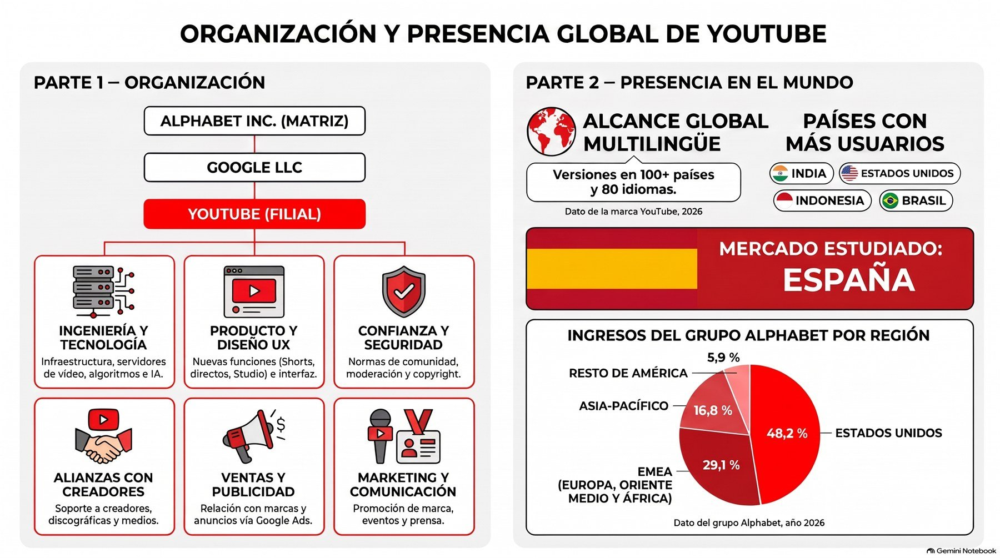

Ingeniería y Tecnología
Infraestructura de la plataforma, servidores de vídeo, algoritmos de recomendación e inteligencia artificial.
Dónde está YouTube dentro de su grupo, cómo se reparte el trabajo y en qué partes del mundo está presente.
YouTube es una filial de Google, que a su vez pertenece al grupo tecnológico Alphabet Inc. Esta estructura se creó en 2015 para separar los negocios principales de internet (como el buscador, Android y YouTube) de los proyectos más experimentales.
YouTube no publica un organigrama completo. La información disponible se divide en tres niveles: su posición dentro de Alphabet, sus principales directivos y las grandes áreas en las que trabaja, que se deducen de sus portales de empleo y comunicados oficiales.
Infraestructura de la plataforma, servidores de vídeo, algoritmos de recomendación e inteligencia artificial.
Nuevas funciones como Shorts, directos o YouTube Studio, y diseño de una interfaz fácil de usar.
Normas de la comunidad, moderación de contenidos y gestión del copyright.
Apoyo a youtubers, discográficas y medios para crecer y monetizar sus canales.
Relación con marcas y anunciantes y venta de espacios publicitarios a través de Google Ads.
Promoción de la marca, eventos con creadores y relación con la prensa.
| Nombre | Cargo |
|---|---|
| Neal Mohan | Director ejecutivo (CEO) de YouTube desde febrero de 2023 |
| Mary Ellen Coe | Directora de Negocio (Chief Business Officer) |
| Lyor Cohen | Director global de Música |
| Pedro Pina | Vicepresidente para Europa, Oriente Medio y África (EMEA) |
| Sundar Pichai | CEO de Alphabet y Google |
Su presencia es casi mundial. Los países con más usuarios son India, Estados Unidos, Indonesia y Brasil.
Es uno de los mercados europeos más maduros en consumo de vídeo digital y un país clave en la creación de contenido en español, con alcance hacia toda Latinoamérica. Además, facilita el acceso a datos y ejemplos de creadores y marcas de nuestro entorno.
YouTube no publica sus ingresos por región; este dato es del grupo Alphabet, ejercicio 2025.
Fuente: Informe anual de Alphabet (Form 10-K), ejercicio 2025.
